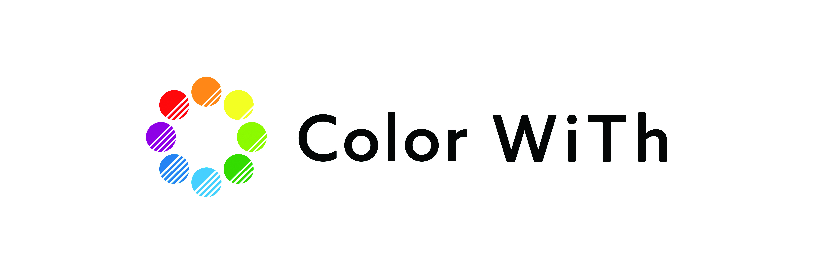
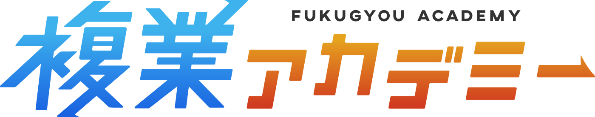

鈴木孝輔（こうすけ）
株式会社Japalent 代表取締役 ／ リモート出稼ぎ大学 学長
海外リモートを、日本の当たり前に。
日本人の才能と、世界の仕事をつなぐ。

自己紹介
2000年生まれ。海外リモートワークの提唱者として、YouTube・コミュニティ・法人事業を通じて「日本にいながら世界と働く」選択肢を広めています。
ストーリー（要約）
新卒2か月でパニック障害により退職。事業の失敗を重ね、早朝のコンビニ勤務を経験。その後、海外リモートワークとの出会いで人生が動き始めました。同じように悩む人へ選択肢を届けたいという想いで、YouTube・コミュニティ・株式会社Japalentを立ち上げました。
主な実績
23,700+YouTube登録者
500+指導実績
100%*受講生満足度
1.1M+YouTube総再生
*自社アンケートによる。YouTube数値は2026年9月時点。
事業
リモート出稼ぎ大学
海外リモートワークに挑戦する日本人のための学習コミュニティ。初心者が最初の海外案件を獲得するまで伴走します。
LinkWay
LinkedInを活用し、日本にいながら海外案件・外貨獲得を目指すコミュニティ。プロフィール、発信、案件獲得を支援します。
Japalent Projects
日本人人材ネットワークと海外案件の知見を活かし、AI・日本語データ・教育・CX領域で企業との共同プロジェクトを推進。
成功事例
CASE 01
家がなくネットカフェで暮らしていた若者が、YouTubeをきっかけに海外リモートへ挑戦。月20万円達成後、実家へ。現在は月50万円以上を獲得するフリーランスに。
CASE 02
副業で長期間成果が出なかった会社員が、1か月間の伴走で初収益を達成。退職後、現在はJapalentの仲間として活動。
※本人から共有された個別事例です。成果には個人差があり、収入や案件獲得を保証するものではありません。
協業パートナー



ビジョン（今後3年）
海外リモートワークを、特別な選択肢ではなく、誰もが知る当たり前のキャリアにする。
- 海外クライアントと、日本のチームをつなぐ
- 同じ志を持つ企業・パートナーと共創する
- 世界へ挑戦する若い世代を増やす
礼儀正しさ、責任感、丁寧さ。日本では当たり前のソフトスキルが、世界では大きな価値になる。日本人がグローバルな視点を持ち、その才能で世界の仕事を前に進めていく社会をつくります。
お問い合わせ
作成日：2026年9月18日 ／ 鈴木孝輔（こうすけ）